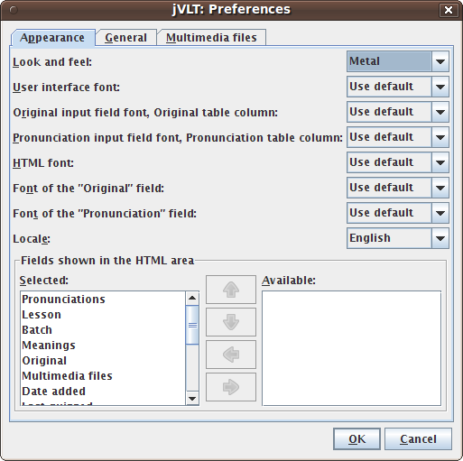
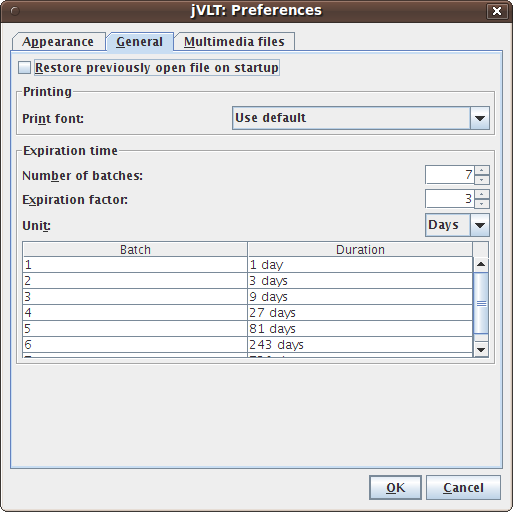
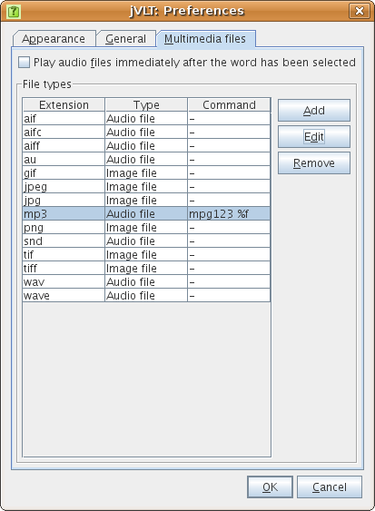

jVLT - a vocabulary learning tool
Settings
Appearance Settings
In the "Appearance" tab the look and feel, fonts, the locale, and the fields shown in the HTML area can be selected. When selecting a font, either the default one can be used or a custom one can be chosen by selecting "Choose font..." from the drop-down menu.- Look and feel: The look and feel determines the general appearance of the application. How many look and feels are available depends on the operating system.
- User interface font: The user interface font is used for all components except for the detailed view of words and examples and the components for which the font is set via the two following settings. Note that adjusting this font is only possible if the "Metal" look and feel is used.
- User interface font for "Original": This font is used for words and examples in the original language.
- User interface font for "Pronunciation": For the pronunciation a custom font can be defined, too.
- HTML font: This font is used for the HTML areas in the Vocabulary, Examples, and Quiz tab.
- HTML font for the "Original" field: This setting determines the font of the "Original" field in the detailed view.
- HTML font for the "Pronunciation" field: You can also select the font for displaying the pronunciation in the detailed view.
- Locale: This setting determines the language of the application's strings.
- Fields shown in the HTML area: Here you can select which fields are shown in the detailed view of the vocabulary tab.

General Settings
In the "General" tab you can currently make the following settings:- Restore previously open file on startup: If you select this checkbox, jVLT remembers which file you worked on during your last session and loads it on the next startup.
- Print font: You can either use the default font for printing or select a custom one by selecting the "Select font..." item from the drop-down menu.

Expiration time
The expiration time determines when a word becomes active again after a quiz (see the quiz section). There are three settings to modify the expiration time:- Number of batches: The maximum batch number assigned to a word. If a word which already has the maximum batch number is known during a quiz, its batch number does not change (normally it increases by one).
- Expiration factor: Determines the time after which a word becomes active again. If X is the expiration factor a word assigned to batch No. i becomes active after Xi-1 time units. I.e. a word on batch No. 1 becomes active after one time unit, a word on batch No. 2 after X time units, a word on batch No. 3 after X2 time units etc.
- Unit: The time unit can either be days or hours.
Multimedia Settings
In this tab, you can adjust how multimedia files specified in the word dialog are handled by jVLT.
- Play audio files immediately after the word has been selected: By toggling this check box, jVLT automatically plays audio files if you select a word in the word list.
File types
In the "File types" area external commands to play/show multimedia files can be defined. Pressing "Edit" or "Add" opens a new dialog which lets you edit a certain file type. The meaning of the dialog's components is described below:- File extension: The file extension, e.g. "mp3". For the default file types, this value cannot be changed.
- Type: The file type. This setting is optional, it only determines which icon is used in the detailed word view .
- Use jVLT to play/show: You can only select this checkbox for the default file types. If it is selected, jVLT will try to play a file itself instead of using an external command.
- Command: The command to use for playing/showing a file with the current extension. You have to add %f as a placeholder for the file name.